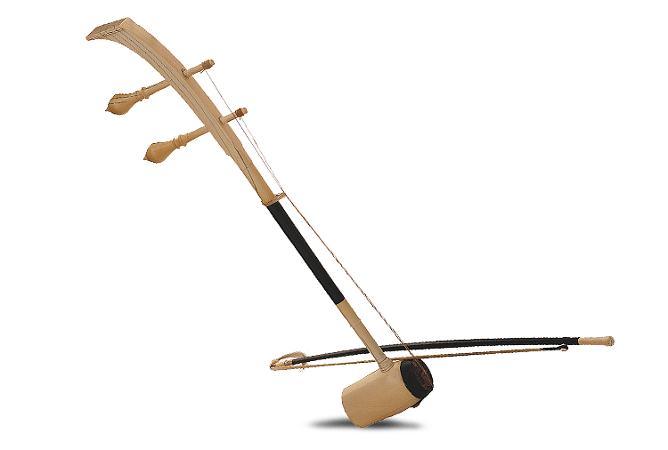

ลาว
ซออี้
เป็นเครื่องดนตรีพื้นเมืองประเภทเครื่องสายของลาว ซออี้มีลักษณะคล้ายคลึงกับซอสามสายของไทย
อ่านต่อ >>เป็นเครื่องดนตรีไทยชนิดสีประเภทซอ เครื่องสายอีกประเภทหนึ่งที่ทำให้เกิดเสียงด้วยการใช้คันชักสีเข้ากับสาย ใช้ประกอบวงเครื่องสาย วงมโหรี วงปี่พาทย์ไม้นวม และวงปี่พาทย์ดึกดำบรรพ์ มีหน้าที่หยอกล้อยั่วเย้าไปกับทำนองเพลง กระตุ้นอารมณ์ให้สนุกสนาน โดยเฉพาะในการบรรเลงประกอบการแสดงหนกระบอก และการร้องแอ่วให้สอดประสานกลมกลืนกัน ซอที่ใช้อยู่ในวงดนตรีไทย มี 3 ชนิดคือ ซอด้วง ซออู้และซอสามสาย
ซอ 3 สาย
ซออู้
ซอด้วง
ซอด้วงเป็นซอสอง สาย มีเสียงแหลม ก้องกังวาน คันทวนยาวประมาณ 72 ซม คันชักยาวประมาณ 68 ซม ใช้ขนหางม้าประมาณ 120 – 150 เส้น กะโหลกของ ซอด้วงนั้น แต่เดิมใช้กระบอกไม้ไผ่มาทำ ปากกระบอกของซอด้วงกว้างประมาณ 7 ซม ตัวกระบอกยาวประมาณ 13 ซม กะโหลกของซอด้วงนี้ ในปัจจุบันใช้ไม้จริง หรือ งาช้างทำก็ได้
อ่านต่อ >>ซอกัมพูชาเป็นเครื่องดนตรีพื้นเมืองประเภทเครื่องสายของกัมพูชา ตัวซอทำมาจากกะลามะพร้าวชนิดพิเศษ ปลายข้างหนึ่งจะถูกปิดด้วยหนังสัตว์ สายทั้งสามทำมาจากเส้นไหม ซอกัมพูชามีลักษณะคล้ายคลึงกับซอสามสายของไทย
อ่านต่อ >>เป็นเครื่องดนตรีพื้นเมืองประเภทเครื่องสายของลาว ซออี้มีลักษณะคล้ายคลึงกับซอสามสายของไทย
อ่านต่อ >>เป็นเครื่องดนตรีประเภทเครื่องสายของประเทศเวียดนามและถือเป็นเครื่องดนตรีประจำชาติ มีประวัติศาสตร์ที่ยาวนาน นอกจากนี้ด่านเบิ่วยังเป็นเครื่องดนตรีที่มีเอกลักษณ์เป็นอย่างมาก เนื่องด้วยเป็นเครื่องดนตรีที่ชนิดเครื่องสายที่มีเพียงสายเดียวเท่านั้น สายจะถูกตรึงด้วยตะปูและผู้เล่นจะใช้มือหนึ่งข้างในการดีดเพื่อสร้างเสียง ฉะนั้นการเล่นด่านเบิ่วจึงถูกเล่นแบบโมโนคอร์ดหรือเล่นแบบคอร์ดเดียว โดยอาศัยความสามารถของผู้เล่นในการสร้างเสียงที่แตกต่างออกมาให้กลมกลืน ด่านเบิ่วจึงถือว่าเป็นเครื่องดนตรีที่ต้องอาศัยความชำนาญของผู้เล่นเป็นอย่างมาก
อ่านต่อ >>เอ้อหูหรือซออู้(ซอสองสาย)เป็นเครื่องดนตรีจีนประเภทสีที่มีชื่อเสียง เริ่มมีตั้งแต่สมัยราชวงศ์ถัง(คริสต์ศตวรรษที่7-คริสต์ศตวรรษที่10) เวลานั้นเอ้อหูเป็นเครื่องดนตรีที่นิยมเล่นในหมู่ชนชาติส่วนน้อยที่พำนักอยู่ในเขตพื้นที่ภาคตะวันตกเฉียงเหนือของจีน ในประวัติวิวัฒนการนานกว่า 1,000 ปีนั้น ซอสองสายเป็นเครื่องดนตรีบรรเลงประกอบในวงงิ้วโดยตลอด
อ่านต่อ >>เป็นเครื่องดนตรีประเภทเครื่องสายที่ใช้คันชักอิสระ โดยทั่วไปมี 2 สาย บางถิ่นมี 3 สาย รูปร่างของรือบับคล้ายกับซอสามสายของไทย ใช้บรรเลงเดี่ยวเเละบรรเลงประกอบการขับร้องทั้งในวงกัมเมลัน เเละในวงดนตรีของชาวบ้านทั่วไป
อ่านต่อ >>สาเหตุที่ซอแต่ละประเทศมีการแตกต่างกันเพราะว่า ประเทศต่างๆมีวัฒนธรรมและสิ่งแวดล้อมที่ต่างกัน ยกตัวอย่างเช่น ประเทศอินโดนิเซียได้รับเอาอิทธิพลซอ มาจากประเทศอินเดีย และในประเทศเวียดนามได้รับอิทธิพลมาจากประเทศจีน ทำให้ซอลักษณะที่มีความคล้ายคลึงกับเครื่องดนตรีจากประเทศจีน รวมถึงการได้รับวัฒธรรมจากการตกเป็นเมืองขึ้น
ประเทศพม่าและประเทศมาเลเซีย เนื่องจากพม่าและมาเลเซียเคยตกเป็นเมืองขึ้นของประเทศอังกฤษจึงได้รับอิทธิพลทางวัฒนธรรมจากประเทศอังกฤษจึงมีเครื่องดนตรีสากลมาแทนซอ ประเทศฟิลิปิน มีชุมชนชาวสเปนตั้งอาณานิคมสเปน ได้ชื่อว่าสเปนใหม่ ตกอยู่ภายใต้สเปนเกือบ 400 ปี และได้ตกมาเป็นรัฐในอารักขาของ สหรัฐอเมริกา จึงได้รับอิทธิพลทางวัฒนธรรมจากประเทศสเปนและสหรัฐอเมริกาจึงมีเครื่องดนตรีสากลมาแทนซอ ส่วน บรูไนยินยอมเข้าอยู่ภายใต้อารักขาของอังกฤษจึงได้รับอิทธิพลทางวัฒนธรรมจากประเทศอังกฤษจึงมีเครื่องดนตรีสากลมาแทนซอ
เนื่องจากการได้รับอิทธิพลผ่านเครื่องดนตรีในศาสนาฮินดู บวกกับวัฒนธรรมหลายๆอย่างที่คล้ายคลึงกันจึงทำให้ รือบับ ของอินโดนีเซียคล้ายครึงกับซอสามสายของไทย